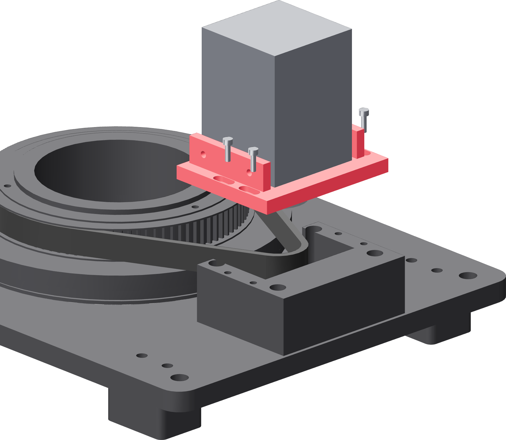

Into the belt, onto the rails
The belt goes on the big pulley first and is held open. The carriage and motor come down as one piece, and the small pulley enters the loop on the way.

- Hang the 550-5M-15 belt on the turntable's 90-tooth pulley, teeth inward, and let it find its grooves all the way round.
- Hold the free bight open with one hand, wide enough for the 20-tooth pulley to pass into it.
- Bring the carriage and motor over as one piece, small pulley pointing into the bight.
- Lower until the 20-tooth pulley is inside the loop and the carriage's arms land flat on the two rail tops.
- Start four M3 × 10 through the carriage's slots into the rail inserts, at the inboard end of each slot. Leave them loose.
- Check the belt is in the printed grooves for its whole wrap and between both flanges of the small pulley.
Do not lever the belt on
Never roll the belt onto the small pulley with a screwdriver against the flange. The slots exist so the belt goes on slack and the carriage moves outward afterwards.